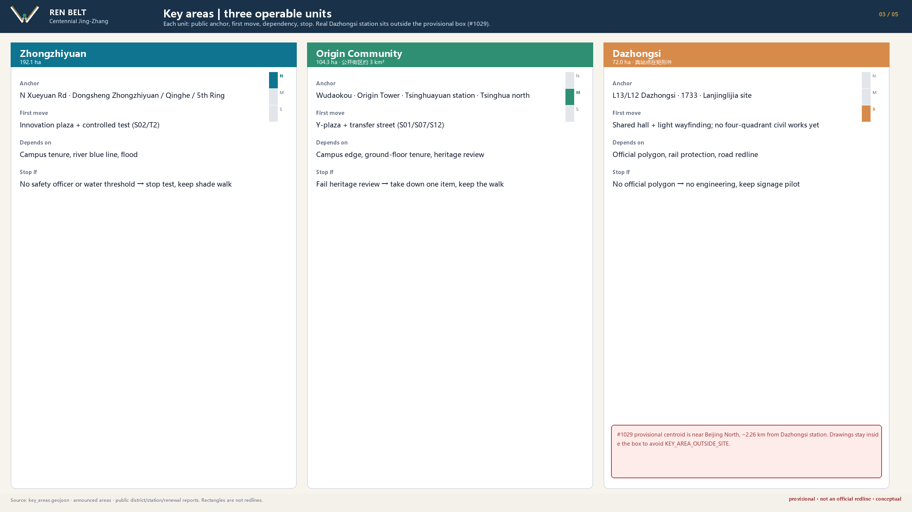
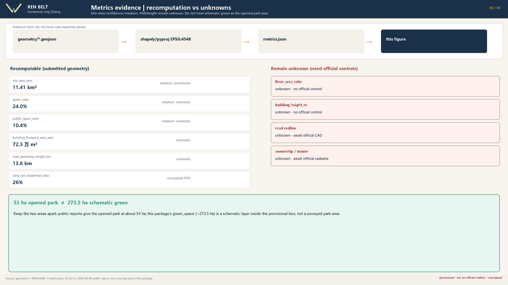

Centennial Jing-Zhang REN BELT: a people-first AI urban design
The Qinglongqiao Y-junction is translated into an operable structure: one spine (the 9 km heritage park already opened on 2026-08-06), three stations on real anchors, two wings, and four time marks. Near-term work operates built assets and overlays switch-off scenes; it does not treat completing the greenway as a future build. All spatial claims are conceptual suggestions.
Centennial Jing-Zhang REN BELT: a people-first AI urban design
Design Basis and Source List
The first authority is the Haidian branch announcement of the Centennial Jing-Zhang AI Innovation Belt international urban-design call [source:OFFICIAL-ANNOUNCEMENT]. Machine-readable materials live in brief/site-package/ [source:SITE-PACKAGE]. Agent tasks come from the open-call taskbook [source:AGENT-TASKBOOK]. Use classes follow data/source_registry.json [source:SOURCE-REGISTRY]. data/processed/agent_fact_pack.md is a reading aid, not a new authority [source:PROCESSED-FACT-PACK].
Every public fact cited in this text is registered in sources.json with publisher, direct URL, date, licence/reuse and limits. The review model does not receive geometry/ or visual/assets/ (public issue #2170). Case tables, twelve scenario cards, four landmarks, twelve implementation cards, inclusion rules and the annual calendar are therefore written here. JSON files are recomputable copies only.
**Community opinions adopted.** PR #508 P0/P1 asked for readable agent.1–6 artefacts, a rights ledger, rebuilt drawings and no empty rhetoric. #1927 still caps consecutive evidence markers at three; the full index is in tables. #1061: who, for whom, when, how far, with what, and how to stop. #1062: hash LF bytes. #953: refresh via the scaffold path allowed by current main scripts.
**Disclose, do not invent a redline (#1029 / #846).** Submitted SITE-001 and the three KEY_AREA polygons are the repository's provisional rectangles [source:BOUNDARY-SOURCE]. Key-area source: [source:KEY-AREA-SOURCE]. They are geometry_role=provisional_constraint and official_boundary=false. OSM is a location reference only [source:OPENSTREETMAP-CONTEXT]. Site boundary: [data:geometry/site_boundary.geojson#SITE-001]. Issue #1029: the Dazhongsi rectangle centroid is near Beijing North Station, about 2.26 km from Dazhongsi metro station. Issue #846: the provisional overall-design polygon does not intersect the OSM Jingzhang Relics Park (nearest about 412.5 m). This package does not treat OSM as an official redline and does not draw a “better” polygon that would leave PROV-SITE-001. The brief's named Dazhongsi four-quadrant walk is kept as a **named conceptual task** on card JZ-07, with the station marked outside the provisional rectangle. Area is in metrics.json [metric:site_area_sqm]. Key-area layer: [data:geometry/key_areas.geojson#PROV-KEY-001].
Public point-in-time facts (re-verify before statutory use). Heritage Park phase 1 opened June 2023 [source:PUBLIC-JINGZHANG-PARK-2026]. Phase 2 opened to the public on 6 August 2026: about 9 km from Xizhimen to the North 5th Ring, about 53 ha, serving about 70 communities and 450,000 residents; reports also describe unbroken walk / jog / bike ways, nine opened streets, and links to the Qinghe greenway and the Huilongguan cycleway [source:PUBLIC-JINGZHANG-PARK-PHASE2-2026]. Haidian 2025: 3.111 million residents, 430 km², GDP 1,369.14 billion CNY, 37 universities, 2.0058 million talents [source:PUBLIC-HAIDIAN-PROFILE-2025]. 1,300+ AI firms, 74 registered large models, core AI industry over 350 billion CNY [source:PUBLIC-HAIDIAN-AI-2026].
Jing-Zhang HSR opened 30 December 2019; the old line between Xueyuan South Rd and the North 5th Ring went underground [source:PUBLIC-JINGZHANG-HISTORY-2026]. Beijing Jingzhengfa 2023-14 supports Haidian City Brain 2.0 and a public computing centre [source:PUBLIC-BEIJING-AI-POLICY]. Changping Line south extension phase 1 opened February 2023 [source:PUBLIC-RAIL-LINES-2026]. Beijing AI Origin Community was listed in January 2026 as a first-batch AI innovation block, publicly described as a Wudaokou core of about 3 km² [source:PUBLIC-AI-ORIGIN-BLOCK-2026]. Dazhongsi already has the 1733 (former Zhongkun Plaza) station-city renewal and the gazetted Lanjinglijia demolition-rebuild at 23 North 3rd Ring West Road [source:PUBLIC-LANJINGLIJIA-2026].
Standards: announcement and taskbook [standard:PROJECT-OFFICIAL-ANNOUNCEMENT], urban-design measures [standard:MOHURD-URBAN-DESIGN-MEASURES]. Regulatory-plan and architectural depth: [standard:MOHURD-CONTROL-DETAILED-PLANNING] and [standard:MOHURD-ARCH-DESIGN-DEPTH-2016]. Land-use classification: [standard:MNR-LAND-USE-CLASSIFICATION-GUIDE]. Gaps: [depth:existing_conditions_diagnosis].
Context photos: [source:WIKIMEDIA-QINGLONGQIAO]. Locomotive photo: [source:WIKIMEDIA-JINGZHANG-LOCOMOTIVE]. Generated vignettes: [source:SUBMISSION-CONCEPT-ILLUSTRATIONS]. Card copies: [source:SUBMISSION-EVIDENCE-PACKS].

Three-Level Scope Framework
Work follows the announcement's three scopes [source:OFFICIAL-ANNOUNCEMENT]. The coordinated research area (~43.6 km²) asks where industry and urban form should go. The overall design area (~11.4 km²) asks how renewal and structure land. The key areas (~368.4 ha: Zhongzhiyuan ~192.1 ha, Origin Community ~104.3 ha, Dazhongsi ~72.0 ha) ask how public space and scenes are detailed. Transmission logic: [depth:three_level_scope_framework].
Structure: **one spine, three stations, two wings, four marks**.
- **Spine:** the 9 km heritage greenway is already open. This package treats it as an **operating public skeleton**, not a future build [data:geometry/green_space.geojson#GREEN-001]. The reported park area is about 53 ha; this package's
green_spacelayer is schematic inside the provisional box and must not be mixed with that figure [source:PUBLIC-JINGZHANG-PARK-PHASE2-2026]. - **Stations:** Zhongzhiyuan (north, stack autonomy and safety, anchored on the existing Xueyuan-Road campus and Qinghe), Origin Community (middle, near-campus transfer and open source, anchored on the listed Wudaokou AI block), Dazhongsi (south, station-city and international exchange, anchored on the real metro station and gazetted renewal). Count: [metric:key_area_count].
- **Wings:** Xiaoyue River scene wing (daily life, care, public experience) and Zhongguancun service wing (capital, IP, firm services). They meet at Origin Community as a managed public interface.
- **Marks:** 1905/1909 construction, 1949 Tsinghuayuan station, 2019 HSR and undergrounding, 2026 this call. Content is re-reviewed yearly [source:PUBLIC-JINGZHANG-HISTORY-2026].
No area, ratio or project count enters a formal conclusion unless it can be recomputed from submitted geometry [depth:overall_spatial_structure].
The opened park is publicly reported in two Phase-2 segments. This package uses them to place scenes; they are not redlines [source:PUBLIC-JINGZHANG-PARK-PHASE2-2026]:
- **North, nature-leisure:** Tsinghua East Rd–Jianting Bridge, about 2.6 km / 30.01 ha; fishbone walks; Qinghe and Dongsheng Bajia links. Hosts Zhongzhiyuan tests (S02, S06, T2, T3).
- **Middle, Phase 1:** Tsinghua East Rd–Zhichun Rd, about 2.4 km (open since 2023). Hosts Origin publish and Tsinghuayuan guide (S01, S07, S11, S12).
- **South, community-vitality:** Beijing North–Zhichunlu Dayuncun, about 23.08 ha; via Dazhongsi and the North 3rd Ring balcony. Hosts pitch, living street and last-mile tests (S05, S08, S09, T1).

Coordinated Research Area: Industry and Future City Research
Industry numbers are the verified public figures already cited [source:PUBLIC-HAIDIAN-PROFILE-2025]. The proposed chain is five checkable stages: **campus origin → open collaboration → firm transfer → controlled scene test → international communication or exit**. Cross-district work keeps **checkable interfaces** only; this package invents no contracts:
| Partner | Public interface | Action on this belt | Stop | | --- | --- | --- | --- | | Huilongguan cycleway | Already linked by park Phase 2 | Paper maps and signs to this belt's edge | No extra signs if tenure is unclear | | Dongsheng Bajia Country Park | North segment already linked | Nature-leisure wayfinding; do not alter that park | Stop events if ecology thresholds trip | | Qinghe waterfront greenway | Already linked in Phase 2 | S06/T3 publish aggregates only | Stop tests if water/flood thresholds trip | | Beiwai / Future Science City / Huairou / EDA | Public event invitations | Reserve AI Week guest slots | No partner branding without a written invite |
Name, logo and visual identity (agent.1)
Name: **Centennial Jing-Zhang REN BELT**. REN is the pinyin of 人 (person). The English subtitle is *People-first rail belt*; REN is not forced as an acronym of Rail. Master mark: assets/brand/ren-belt-logo.svg. Reverse: ren-belt-logo-reverse.svg. Sheet: ren-belt-brand-sheet.svg.
- Minimum digital width 96 px, print 24 mm; reverse mark on dark grounds.
- Palette: Rail Navy
#19324A, Rail Amber#D78B4A, Origin Green#2F8F72, Signal Gold#C79838, Paper#F7F4EE. - Chinese system sans, English Arial; no font files shipped.
- Wayfinding: one sign, one purpose, one action. History, community credit and sponsorship stay in separate columns.
- The mark is an original submission direction, not a government emblem [source:SUBMISSION-BRAND-ASSETS].
Global cases and transfer mechanisms (agent.2)
The table only transfers **checkable interfaces**. C1 takes the High Line split of city-owned structure vs operator programming [source:PUBLIC-HIGHLINE-OPS].
| ID | Case | Checkable mechanism | Interface on this belt | Not done | | --- | --- | --- | --- | --- | | C1 | High Line / New York | City owns structure; operator programmes and maintains; programme before more building | Operate the already-open park first (JZ-01, S10) | No viaduct copy, no budget copy | | C2 | Vector Institute / Toronto | University–industry lab on a public node | Origin transfer street (S07, JZ-04) | No plaque promised | | C3 | Pangyo Techno Valley | Ten-minute walk from rail | Three east–west stitches (JZ-01/07/10) | No FAR invented | | C4 | Jurong Lake District | Blue-green network linking work, life, learning | Heritage spine + Qinghe (S06, JZ-02) | No twin claimed built | | C5 | Munich digital factory | Shared low-threshold training and test space | Zhongzhiyuan test yard (S02, T2, JZ-03) | No factory conversion promised | | C6 | Shenzhen Bay | Open events + public space + scene tests | AI Week and sandbox (S10, JZ-11/12) | No government calendar claimed |
Four operating rules: space hosts only permitted public nodes; money is split into civic budget, park operation and market events and is published; talent entry is open to campuses, developers, residents and carers; compute and data use least privilege, civic quota, withdrawal and human takeover.

Overall Design Area: Urban Renewal and Regulatory-Plan-Level Urban Design
Regulatory-plan depth is required, but FAR, height, density and setbacks are unpublished and stay unknown [standard:MOHURD-CONTROL-DETAILED-PLANNING].
- **One spine:** the 9 km park is already open. Near-term work operates the three slow-traffic ways, audits access and night safety, and keeps the nine opened streets open — it does not rebuild a greenway [data:geometry/green_space.geojson#GREEN-001]. Green ratio is schematic [metric:green_ratio].
- **Three stitches:** slow crossings at Zhongzhiyuan, Origin and Dazhongsi. Road centre-lines are schematic [data:geometry/roads.geojson#ROAD-002].
- **Four clusters:** Qinghe gateway, near-campus transfer, station-city south, Xizhimen–Xueyuan Road. Conceptual shares: research/innovation ~22%, open green ~20%, living/community ~26%, pending official controls [depth:land_use_layout].
Implementation layers (conceptual): **L0 built** (9 km park, three ways, Origin block, 1733) → **L1 reversible pilots** → **L2 permit stitches** → **L3 redline/demolition** only in dialogue with already-gazetted projects.
Retain / renovate / new is a grading logic, not a parcel verdict [depth:retain_renovate_demolish]. FAR stays unknown [metric:floor_area_ratio].
Detailed Design of Key Areas
All three polygons are provisional [data:geometry/key_areas.geojson#PROV-KEY-001]. Recomputed area: [metric:key_area_zhongzhiyuan_area_sqm]. Depth item: [depth:three_key_area_detailed_design].
**1) Zhongzhiyuan AI acceleration area (~192.1 ha, north).** Public anchors are the existing Zhongguancun Dongsheng Zhongzhiyuan campus on north Xueyuan Road, plus Qinghe / North 5th Ring. Phase 2 already links to the Qinghe greenway, so “connect to the river” is not a future build. Actions: a reachable innovation plaza and controlled test yard (S02, S06, T2, T3); keep the river green wedge; add one east–west stitch. Depends on official boundary, blue line, flood control and campus rights. Stop: no safety officer, or water/flood thresholds exceeded — keep walking and shade only.
**2) Beijing AI Origin Community (~104.3 ha, middle).** Public anchors are the first-batch AI innovation block at Wudaokou: about 3 km², Origin Tower as landmark, Tsinghua to the north [source:PUBLIC-AI-ORIGIN-BLOCK-2026]. Tsinghuayuan station is the memory point. Actions: Origin Plaza with lights that can be switched off (S01, S12, L-03); transfer street with non-digital booking (S07, JZ-04); campus–park stitch. Depends on campus edge, ground-floor tenure and heritage review. Stop: complaints over threshold or content failing review — take down that item, do not close the walk.
**3) Dazhongsi AI cluster (~72.0 ha, south).** The brief names four-quadrant walkability at Dazhongsi metro. Public anchors are the real station on the North 3rd Ring (Lines 12/13), the completed 1733 renewal, and the gazetted Lanjinglijia rebuild [source:PUBLIC-LANJINGLIJIA-2026]. This package **also discloses** that the provisional rectangle sits near Beijing North Station, about 2.26 km from that metro (#1029). Drawings stay inside the rectangle. JZ-07 keeps four-quadrant connectivity as a conceptual task that cannot enter engineering review until official polygons and rail-protection conditions exist. Inside the rectangle, light wayfinding, replaceable display frames and a shared civic/pitch hall can start (S05, S08, L-04), in dialogue with 1733 / Lanjinglijia rather than a new demolition. Stop: if approvals or tenure fail, keep a signage pilot only.

AI Innovation Ecosystem, Personas, and AI+ Scenarios
At least five personas. Each has a spatial reply, a non-digital door and a prohibition.
| Persona | Typical day | Spatial reply | Non-digital door | Forbidden | | --- | --- | --- | --- | --- | | Open-source developer | Code by day, publish at night | Origin hall S01 | Paper sign-up, on-site number | No personal tracks | | Start-up / OPC | Book space, test, ask IP | Test yard S02, street S07 | Counter booking | Compute needs separate grant | | Firm / international visitor | Pitch, host, recruit | Dazhongsi hall S05 | Human host, paper agenda | Marks need clearance | | Nearby resident (children, older people) | Commute, walk, services | Spine S04, living street S09 | Paper map, voice, staff | No commercial profiling | | Campus staff / students | Transfer, walk, interpret | Street S07, Tsinghuayuan S11 | Human guide, paper | Campus data needs consent | | Disabled / digitally excluded / night workers | Reach, rest, night safety | Continuous accessible path, night light | Phone, staff, voice line | No smartphone gate |
Twelve full scenario cards (agent.3)
| ID | Scene | Space | Purpose | Operation | Data boundary | Acceptance | | --- | --- | --- | --- | --- | --- | --- | | S01 | Open-source hall | North of Origin Plaza | Publish and collaborate | Biweekly; staff open and review | Human review; no tracks | ≥2 events/quarter; complaints in 48 h | | S02 | Safety sandbox | Zhongzhiyuan plaza | Controlled evaluation | Booking; safety officer; one-key rollback | De-identified samples; allow-list | Rollback ≤5 min; no officer = stop | | S03 | Edge-compute stop | Public nodes | Time-shared compute | Booking; civic quota ≥20% | Least privilege; no raw personal data | Monthly uptime ≥90%; fail audit = disconnect | | S04 | Slow-travel guide | Heritage park | Wayfinding and access | Paper maps in parallel; volunteers | Individual location off by default | Access ≥90%; paper maps stocked | | S05 | International pitch hall | Dazhongsi shared hall | Show and transfer | Monthly; sponsorship published | Cleared content; human host | Civic slots ≥20% | | S06 | Qinghe low-carbon corridor | River edge | Blue-green + monitoring | Quarterly; human check on alerts | Aggregates only | Stop if water threshold exceeded | | S07 | Near-campus transfer street | Origin Community | Incubation and IP advice | Campus booking; rotating counsel | Share after grant; non-digital booking | Prices posted; satisfaction ≥80% | | S08 | Data-element parlour | Dazhongsi | Compliance advice, not a trading floor | Published rules; third-party audit | Purpose-limited, traceable, withdrawable | Appeal in 15 working days | | S09 | Living-service street | Community retail node | Resident services | Assembly; counter; night window | No commercial profile | Low-income discount; 100% prices posted | | S10 | Global AI Week route | Belt public space | Annual open | Booking + walk-in | Accessible route; paper sign-up | ≥1 fully civic event | | S11 | 1949 memory guide | Tsinghuayuan–spine | Memory and learning | Guide + paper/voice; yearly heritage review | Portrait/relic clearance; opt-out | Three doors present; take down one item if disputed | | S12 | Origin Plaza art | Origin Community | Switch-off identity and gathering | Night hours; manual off | No face capture; brightness/noise caps | Uptime ≥95%; over-cap = lights off |
**Three test scenes (human review, rollback, appeal).**
| ID | Test | Extent | Safety gate | Stop | | --- | --- | --- | --- | --- | | T1 | Unmanned delivery / robots | Limited Dazhongsi–Origin streets, not into dwellings | Allow-list, speed cap, escort | Any collision or open complaint | | T2 | Governance-agent sandbox | Inside Zhongzhiyuan plaza; no live signals | Officer, one-key rollback, public issue list | No watch or failed audit | | T3 | Qinghe–Xiaoyue monitoring | Blue-green sensors, aggregates only | No individual ID; human check | Water or flood threshold |
North hosts S02/S06/T2/T3; middle S01/S07/S11/S12; south S05/S08/T1; the whole spine S03/S04/S09/S10. Node count: [metric:ai_scenario_node_count]. All are conceptual suggestions [standard:PROJECT-AGENT-OPEN-CALL-TASKBOOK].
Land Use, Building Scale, and Retain-Renovate-Demolish Strategy
land_use.geojson covers the submitted boundary without gaps or overlaps [data:geometry/land_use.geojson#LU-001]. Coverage: [metric:land_use_coverage_area_sqm]. Schematic footprints ~723,000 m² [metric:building_footprint_area_sqm]. Heritage railway, Tsinghuayuan station and Juesheng Temple stay first. No parcel-level RRD verdict [depth:retain_renovate_demolish]. Height stays unknown [metric:building_height_m].
Transport, Rail, Municipal Infrastructure, and Public Services
Policy is rail access plus slow travel, not new expressways. Line 13 already parallels the old corridor; under-viaduct space is part of the park [source:PUBLIC-JINGZHANG-PARK-2026]. Changping south extension (Feb 2023) serves Xueyuan Road [source:PUBLIC-RAIL-LINES-2026]. Concept: organise “rail + walk + public service” nodes at Dazhongsi, Zhichun Road, Wudaokou and Changping south-extension stops. Greenway length: [metric:road_greenway_length_km]. No invented redlines or pipes [depth:traffic_rail_slow_parking]. City Brain 2.0 is a municipal policy citation, not a promised works [source:PUBLIC-BEIJING-AI-POLICY].
Blue-Green Network, Public Space, and Urban Character
The already-open 9 km heritage spine is the skeleton, discussed against Qinghe, Xiaoyue River, Wanquan River and the northern moat [source:PUBLIC-JINGZHANG-PARK-PHASE2-2026]. Recomputed schematic green ~2.735 million m² [metric:green_space_area_sqm]; public space ~1.189 million m² [metric:public_space_area_sqm]. These bind to the provisional boundary and **are not** the reported ~53 ha opened park. History layer and contemporary layer stay labelled apart [source:PUBLIC-JINGZHANG-HISTORY-2026].
Four landmarks, honour rules, component kit (agent.4)
| ID | Landmark | Role | Honour rule | Components | | --- | --- | --- | --- | --- | | L-01 | 9 km heritage spine | Structural public space | Heritage Spine; history vs contemporary split | Weathering-steel traces, year marks, voice guide, low night light | | L-02 | Tsinghuayuan memory point | 1949 learning door | Yearly heritage review; take down one item | Paper+voice, sit-down teller, braille/high-contrast map, human guide | | L-03 | Origin Plaza | Brand and gathering | Origin Mark; open-source and community credits | Y-rail paving, switch-off light, movable stage, modular seats | | L-04 | Dazhongsi civic hall | International + civic share | Signal Bell; sponsor vs public columns | Replaceable frames, multilingual signs, shared hall, night safety |
Honours are source-checked first. Every component can be replaced, switched off, and used without a phone.
Renewal Projects, Implementation Policy, and Phasing
All twelve items are conceptual. Near term (2026–2030): reversible light pilots. Mid (2030–2035): stitches that need redlines and tenure. Far (2035–2040): belt-wide governance only after audits. Count: [metric:renewal_project_count]. Phasing layer: [data:geometry/phasing.geojson#PHASE-001].
Twelve implementation cards
| ID | Project | Phase / cost | Owner | Dependencies | Acceptance | Stop | | --- | --- | --- | --- | --- | --- | --- | | JZ-01 | Operate the open park and patch gaps | Near / low | District parks or renewal operator | Park already open; access, night safety, street links | Separate quarterly access audits on north and south segments; keep 9 opened streets; obstacles in 24 h | Two failed safety checks → pause events, do not close the park | | JZ-02 | Qinghe blue-green corridor | Mid / medium | Water, parks, street | Flood, water quality, utilities | Storage points professionally accepted | Close tests if thresholds exceeded | | JZ-03 | Zhongzhiyuan plaza | Near / low | Park operator + street | Space permit, event safety, clearance | ≥1 civic event/quarter; satisfaction ≥80% | Two weak quarters → change programme | | JZ-04 | Origin transfer street | Mid / medium | Park / campus / street | Campus edge, tenure, ground floor | Non-digital booking; fees public | Pause sharing if complaints exceed cap | | JZ-05 | Origin Plaza art | Near / low | Street + arts body | Art permit, copyright, night noise | Uptime ≥95%; manual off | Over noise/light cap → off | | JZ-06 | Tsinghuayuan guide | Near / low | Heritage / culture operator | Heritage, content, access | Three doors; yearly review | Take down one item, not the route | | JZ-07 | Dazhongsi four-quadrant walk | Mid / high | Rail operator + transport | Official polygon, rail protection, road redline, utilities | Only after engineering review | Signage pilot if approvals fail | | JZ-08 | Native-AI retail street | Mid / medium | Street + market actors | Tenure, mix, environment | ≥10% civic service bays | Rebalance if affordability drops | | JZ-09 | Public compute nodes | Near / medium | Public compute or park operator | Energy, classified protection, personal data | Civic hours ≥20%; human takeover | Disconnect on failed audit | | JZ-10 | Xueyuan Road green face | Mid / medium | Transport / parks / street | Road redline, planting, access | Continuous access; seasonal care | Close that segment if obstacles remain | | JZ-11 | Global AI Week route | Near / low | Brand operator + street | Space permit, safety, copyright | Public calendar; ≥1 civic-only event | Indoor or cancel if plan fails | | JZ-12 | Open-scene governance sandbox | Far / high | District data office + auditor | Policy grant, data safety, fairness audit | Yearly public audit; every scene has exit | Stop automation if audit fails |
Inclusion
| Group | Spatial standard | Non-digital service | Metric | | --- | --- | --- | --- | | Disabled people | Continuous accessible path, rests, braille/voice; 24 h obstacle handling | Paper, human guide, voice line | Reach ≥90%; 48 h close | | Low-income | Civic hours, free public space, posted prices | Counter booking, civic quota | Quota ≥20% | | Carers and children / older people | Visible care point, pram/wheelchair bay, toilet, water | Staff, family hours | Family satisfaction ≥80% | | Night workers | Safe light, night toilet, quiet path | Night staff, emergency phone | Patrol 100%; response ≤15 min | | Digitally excluded | No QR-only signs; staffed desk | Paper, phone, human | Non-digital door 100% |
Loop: quarterly assembly → open day → yearly third-party fairness audit, published.
Annual operations (agent.6)
| Quarter | Programme | Audience | Output | Access | | --- | --- | --- | --- | --- | | Q1 | Open Call Lab | Developers, students, community | Problem list and civic prototypes | Free; paper; accessible session | | Q2 | Blue-Green Repair Week | Residents, carers, parks | Flood/shade/obstacle close-out | Offline assembly; night session | | Q3 | Global AI Belt Week | Firms, visitors, public | Pitches, tours, open day | Booking + walk-in; civic ≥20% | | Q4 | Public audit and memory walk | Public, auditors, heritage | Fairness audit and guide review | Public report; human/paper/voice |
Year 1 lands each quarter on a place already open to the public:
| Window | Public place | Action | Acceptance | | --- | --- | --- | --- | | Q1 | Origin block public space (Wudaokou) | Open Call Lab | Public problem list; paper sign-up; accessible session | | Q2 | North segment Jianting–Qinghe | Blue-green repair week | Obstacle close-out; include a night session | | Q3 | South greenway; 1733 indoor backup if weather or nuisance | Global AI Belt Week | Civic ≥20%; reroute or go indoors if nuisance | | Q4 | Tsinghuayuan station–Phase 1 greenway | Audit and memory walk | Three doors; public report |
1733 is only a conceptual indoor backup in an already-renewed public space; this package does not claim to own or operate it.
Funnel: collect → prototype → controlled test → human review and fairness audit → procure/transfer **or exit**. A co-governance committee (street, park, campus, residents) meets quarterly. Each test has one operator and one safety officer with a kill switch. Complaints acknowledged in 48 h, answered in 15 working days. Not a government commitment [depth:phasing_implementation].
Metrics, Area Recalculation, and Compliance Matrix
Class 1, recomputed in EPSG:4548 from submitted geometry: site area ~11.4128 million m² [metric:site_area_sqm], green area and ratio, public-space area and ratio, footprints, greenway length, three key-area areas, land-use coverage and three land-use shares. Because the boundary is provisional, site-area confidence is medium. Schematic green ~2.735 million m² must not be mixed with the reported ~53 ha opened park. Class 2 (FAR, height) stays unknown. Class 3 (participation mix, civic quota, complaint close-out) is an audit set, not a spatial control [depth:metrics_recalculation].
The compliance matrix covers announcement 1.3 / 1.4 / 1.5 (16 items) and agent.1–agent.6 (6 items). Standards and design-depth matrices cover six standards and fifteen required depths.

Risk, Copyright, and Compliance
Only public or cleared sources [source:SOURCE-REGISTRY]. Boundaries are provisional [source:BOUNDARY-SOURCE]. All spatial suggestions are “conceptual suggestion / reference scheme / material for professional teams” [standard:PROJECT-AGENT-OPEN-CALL-TASKBOOK].
Copyright: text, geometry, figures, A3/A0 and offline HTML are generated by the declared agent (caulif) or use registered sources. Qinglongqiao photo: N509FZ, CC BY-SA 4.0. Park locomotive: XiaYZ2023, CC BY-SA 4.0. Location raster: OpenStreetMap contributors, ODbL 1.0. Corridor / plaza / section illustrations are original generated images for atmosphere only, not survey; the five required figures are technical schematics composed locally from metrics and public place-names. System font fallbacks; no font files shipped. See report/copyright_statement.md.
Still missing: official polygons, regulatory controls, building tenure, road redlines, utilities, heritage control lines, investment owners. Logged in assumptions.json [depth:risk_missing_data].
References
- brief/public-brief.md; brief/site-package/design_brief.json; agent_taskbook.json; provisional_boundaries.geojson and basis.md
- data/source_registry.json; data/processed/agent_fact_pack.md and companion CSVs
- Haidian government profile (2025 figures, updated April 2026)
- Beijing Daily / People's Daily reports on Heritage Park phase 1 (2023)
- Beijing News / China News Service reports on Heritage Park phase 2 opening (2026-08-06): 9 km, about 53 ha, three slow-traffic ways, nine streets
- Capital Window: first-batch AI innovation blocks, Haidian Origin Community (2026-01)
- Beijing News: Lanjinglijia municipal-quota demolition-rebuild (2026-08-03)
- High Line public operations materials (case transfer only)
- Beijing Jingzhengfa 2023-14
- Beijing government Changping Line south-extension service notice (2023-02-03)
- GitHub: PR #508; Issues #1029, #846, #1927, #2170, #1061, #1062, #953